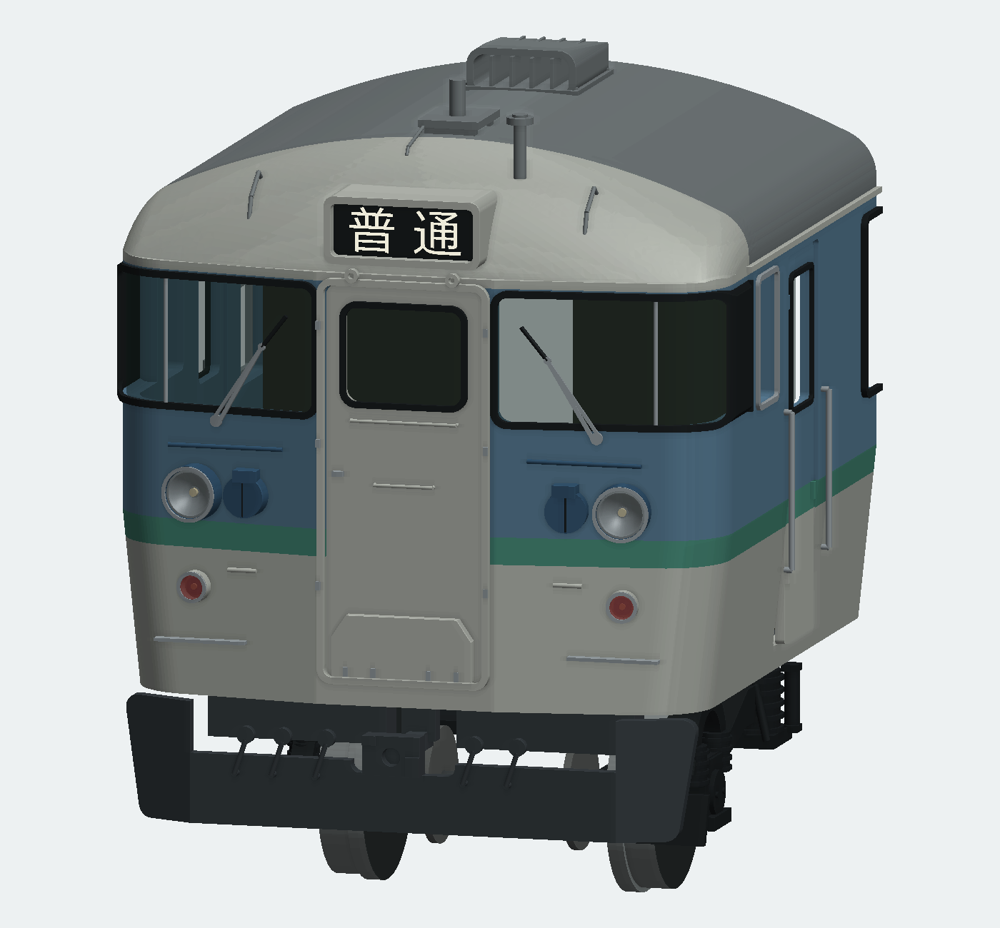
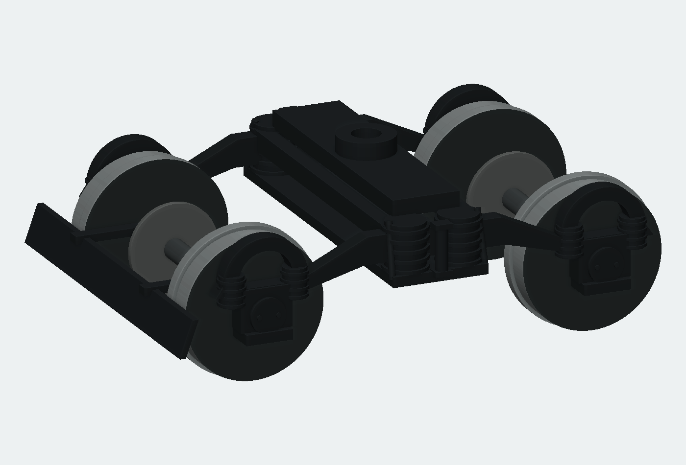
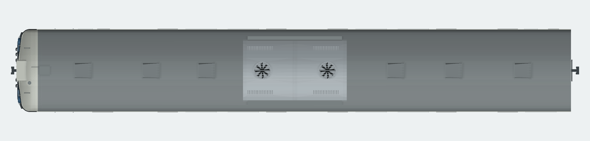
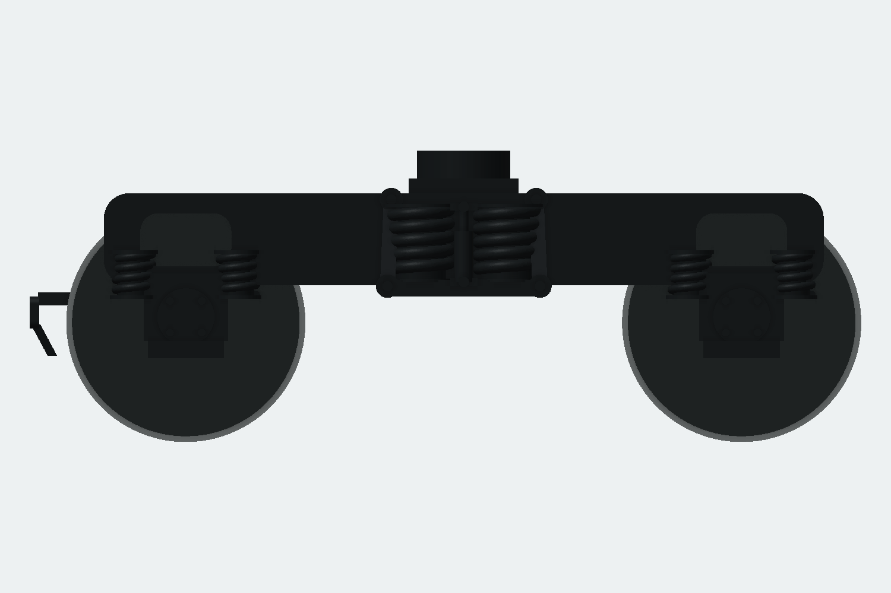
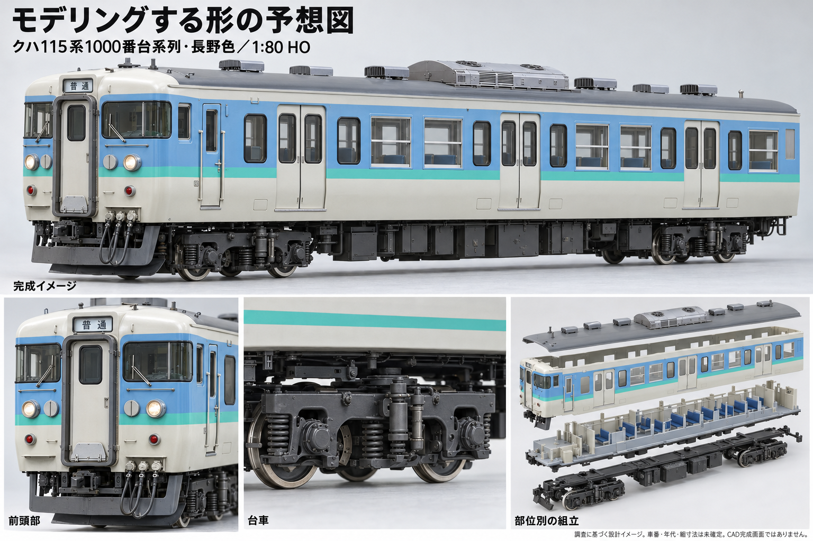

前回のCAD形状と今回の改訂


台車を独立して原図・実車写真と再照合。連続した斜めの巻線、平らな側枠上縁、板状吊りリンク、ダンパーの胴とロッド、横向き両ピストン式シリンダ、左右独立てこ、両面パッドと通気構造付きディスク、折返しのあるプロウを追加・修正。前面・側面・屋根は前版と比較して形を維持し、全体の組付けを再検査した。
クハ115-1222/N15 長野色営業時代（1994〜97年を外装候補）・1/80 HO16.5
同車の2013年訓練車写真は共通の車体形状確認に使い、その塗装・訓練標記・改造箇所は移植しない。局所寸法は写真推定。

台車を独立して原図・実車写真と再照合。連続した斜めの巻線、平らな側枠上縁、板状吊りリンク、ダンパーの胴とロッド、横向き両ピストン式シリンダ、左右独立てこ、両面パッドと通気構造付きディスク、折返しのあるプロウを追加・修正。前面・側面・屋根は前版と比較して形を維持し、全体の組付けを再検査した。



前面窓、横長貫通扉窓、額R9.0、細い灯具縁、タイフォン、スカート、台枠、屋根と側面サッシは前版を維持。実車の局所寸法が完全に確定したとは扱わない。
| 部位 | 前回・途中状態 | 実車で確認した特徴 | 今回の変更 | 残る推定・簡略化 |
|---|---|---|---|---|
| 前頭屋根・額 | 前回の連続屋根でも、窓上から肩へ大きな垂直の平面帯が残る。 | 中央の緩い横断曲率と、前から上へ丸く立ち上がる額、肩への連続。 | 前版の修正を維持し、今回の全体モデルで開口・組付け・保存を再検査。 額の前後円弧をR5.875→9.0 mmへ変更し、曲線の始まりを下げる。短いロフトと解析円弧の一般屋根で構成し、1.0 mmを目標に内側も変更。 | 半径・起点は写真推定。車体上端で屋根が約0.3 mm後退する接合部が残り、実車外板の完全な接線連続を再現したとは扱わない。全面の最小肉厚保証と135点の内外・法線検査は区別する。 |
| パノラミック窓 | 前回に窓高さ7.6 mm・ガラス後退0.22 mmを反映済み。 | 前面から側面へ回るガラス、細い縦桟、ガラスは黒Hゴムの直後。 | 前版の修正を維持し、今回の全体モデルで開口・組付け・保存を再検査。 前面と側面に回るガラス、黒Hゴム、銀色縦桟を写真と再比較して維持。 | 窓寸法・隅Rは写真推定。貫通扉の横長窓を含め所有者の形状指示を優先。 |
| 貫通扉・窓 | 前回に横長開口7.2×5.8 mm、手掛けと渡り板を反映済み。 | 扉・Hゴム・幌受・横手掛け・斜め上隅の渡り板を分けて読む。 | 前版の修正を維持し、今回の全体モデルで開口・組付け・保存を再検査。 横長窓・Hゴム・幌受・斜め上隅の渡り板を維持。 | 車番固有の実測窓寸法ではない。以前のAI図の縦長窓は採用しない。 |
| 表示器・ワイパー | 表示箱と内向きワイパーはあるが、新しい額へ合わせ直しが必要。 | 前面表示器は額から突出した箱。1222写真ではワイパーは内側上方へ停止。 | 前版の修正を維持し、今回の全体モデルで開口・組付け・保存を再検査。 表示箱の背面素材を長くして新しい屋根で切り合わせ、屋根手掛けの足位置を解析曲面に追従。ワイパー姿勢を維持。 | 表示器の小文字・取付ねじ・配管全ての実寸確認は未了。 |
| 前照灯・尾灯 | 前回の金属縁が厚く、赤い尾灯レンズが小さい。タイフォンが薄い円板状。 | 前照灯内部は奥に落ち込む椀状反射面、電球、薄い縁とレンズ。 | 前版の修正を維持し、今回の全体モデルで開口・組付け・保存を再検査。 金属縁を約0.21 mm幅へ細くし、尾灯レンズ半径を0.54→0.69 mmへ。椀状反射鏡・凸レンズを広げる。タイフォンを前面の折角に沿う0.95 mm奥行きの胴へ変更し、背面を車体に合わせた。 | 灯具中心・外径を維持。ガラスの屈折・光学性能、タイフォンの内部・ヒンジは簡略。 |
| スカート・連結器 | 中央スカート上縁が車体下端に近く、ジャンパ栓が板に貼り付いて見える。 | スカートは中央板から左右へ回り込み、連結器切欠の下には連続した下縁。連結器頭部には段差。 | 前版の修正を維持し、今回の全体モデルで開口・組付け・保存を再検査。 中央上縁をZ10.7へ下げ、両側の高い回込板と下縁を残す。ジャンパ栓・管を一体とし、スカートへ接する取付足を追加。 開放部の奥に、連結器の中央逃げを残した前端台枠を床板と一体で追加。 | 中央切欠き・折線・上縁位置は写真からの模型設計値。実連結器の動作機構は再現しない。 台枠は実物の支持構造を簡略化した写真推定形状で、板厚・位置の実測復元ではない。 |
| アンテナ・炎管・屋根手掛け | 前回の架台・傘形炎管・屋根ループはある。 | 広い角形の支持台と脚、引込線、前頭屋根左右のループ手掛け。 | 前版の修正を維持し、今回の全体モデルで開口・組付け・保存を再検査。 新しい額でループ手掛けの足高さを作り直す。角形アンテナ架台と炎管形状は維持。 | 配線の厳密経路・留め具は未確定。 |
| AU75G・歩み板・通風器 | 前回にAU75Gの曲面キセ・二ファン・支持脚を反映済み。 | 幅方向に丸いキセ、二つのファン、保護格子、開口付き通風器、脚付き歩み板。 | 前版の修正を維持し、今回の全体モデルで開口・組付け・保存を再検査。 上面写真と再照合し、2ファンと格子、6通風器、支持脚と歩み板を維持。 | クハ115-1222長野色営業時代の全屋根配管・工場差を確定した復元ではない。 |
| 側面・サッシ・扉 | 左右の側窓・サッシ・扉と便所区画の差を前回反映。 | 固定Hゴムと銀色二段サッシを区別。便所側と運転士側には配列差。 | 前版の修正を維持し、今回の全体モデルで開口・組付け・保存を再検査。 運転士側と助手側の窓配列、銀サッシとHゴムの区別、片側3か所の客扉を再照合して維持。 長野色の緑帯が前照灯の下を通るよう、塗装案の帯をZ22.4〜24.0へ下げた。 | 細かな扉裾・引手・車番別更新差は簡略。 |
| TR62系台車・輪軸・前台車プロウ | 水平な輪の重なりとして見えるばね。二つの大きな円弧状の側枠上縁。ブレーキ駆動系・放射通気部・板リンクの不足。 | 連続した斜めの巻線、平らな連続上縁と浅いばね室、板状吊りリンク、左右に開く両ピストン式シリンダ、内側ディスクの両面を挟むパッドと連結装置。 | ばね・上縁・四隅の軸箱蓋ボルト・板リンク・胴/ロッド付きダンパー・内側制動装置・放射通気ディスク・折返しプロウを実BRepで追加。前8部品/後7部品、詳細原本は別KCDで編集可能。 | 側枠の下縁、上下揺れ枕、軸箱本体はなお簡略化。ばね線径・通気孔12分割・局所寸法は写真推定。ディスク横位置±4.2 mmはHO機構への適合値。車番別TR62A仕様・実印刷・走行・絶縁は未確定/未試験。 |
以下は実CAD形状のSTL描画です。実車写真や生成予想画像とは区別します。


| 部位 | 前版 | 今回 | 残る範囲 |
|---|---|---|---|
| 側枠 | 軸箱上に大きな半円形の上縁 | 平らな連続上縁と浅い独立開口 | 下縁とばね室周囲のえぐりは簡略化が残る。 |
| 枕ばね・軸ばね | 水平な輪と円柱の重ね合わせ | 斜めに続く丸い線材をスイープし、上下の受座を追加 | 外形誤差最大0.000832 mm未満の設計曲線。線径・覆い材質は実測未確定。 |
| 揺れ枕吊り | 細い丸棒 | 幅のある板、丸い目、端のピン | 板厚とピン位置は模型設計値。 |
| 縦ダンパー | 太さ一定の円柱 | 胴、細いロッド、取付耳、横ピンを区別 | 油圧可動機構にはしていない。 |
| 軸箱蓋 | 左右二つのボルト | 斜め四隅のボルト | 本体・翼座・蓋の細部は簡略形。 |
| ブレーキ駆動 | 省略。初回試作ではシリンダの向きを誤認 | 原図レビュー後、横向き両ピストン式シリンダと左右独立の連結へ修正 | てこの寸法・詳細支点形状と配管は推定。動作機構ではない。 |
| 内側ディスク | 厚さ一定の円盤 | 二面の摩擦板、放射状通気孔・リブ、厚いハブ、両面パッド | 直径・通気孔12分割は推定。横位置±4.2 mmはHO機構への適合。 |
| プロウ | 平板一枚 | 丸い上板、斜めに折れた下板、支持腕 | 曲げと取付寸法は写真推定。 |
| 輪軸・車体との関係 | HO16.5向け輪軸と局所押え | 軸距26.25 mm/踏面径10.75 mmを維持し、着脱押え・静的干渉を再検査 | 実印刷、走行、絶縁、市販輪軸の適合・首振り全域は未試験。 |
詳細編集はtr62-native.kcd2、車体内の台車は同一の実BRepを保存した独立部品。両者の体積・外接範囲・形状ハッシュを検査します。

完成時の見え方を示すAI予想図。実車・寸法の正本ではない。
写真原本は作業中に実見。第三者写真はこの配布物へ転載せず、原ページを案内します。透視写真から局所寸法を測り切ったとは扱いません。